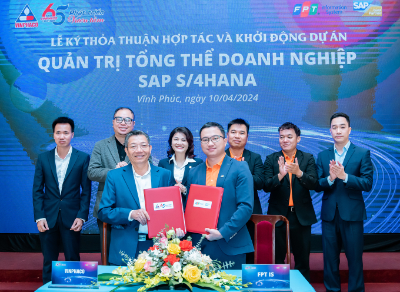

SAP S/4HANA Private Cloud Implementation — Vinphaco
Custom PP/QM reports and modules for pharmaceutical production and quality control, including SAP standard logic simulated through BAPIs, plus OData APIs connecting SAP to external sales applications.

What I delivered
- Managed the development of custom SAP PP/QM reports and modules supporting production management and pharmaceutical quality control, including SAP standard logic simulation using BAPIs.
- Designed and developed OData-based APIs enabling integration between SAP and external sales applications.
Context
Vinphaco manufactures pharmaceuticals, which makes quality management a regulatory obligation rather than a preference. Every batch carries an inspection history, and that history has to be complete and defensible. The implementation ran on S/4HANA Private Cloud.
My scope
Production planning (PP). Reports and modules around production orders — order progress, component consumption, and the reconciliation between planned and actual that production managers ask for daily.
Quality management (QM). Inspection lots, results recording, and usage decisions surfaced in a form the QA team could work from. In a pharmaceutical plant, a report that is merely approximately right is worse than no report.
Standard logic simulation via BAPIs. Several requirements needed the effect of a standard transaction executed from custom code — creating documents, posting results — without a user sitting in front of SAP GUI. Doing that through BAPIs rather than screen recording keeps validation, authorization and update logic intact.
OData APIs. The client's sales applications needed live SAP data. I designed and built OData services as the contract between them.
What I learned here
BAPI over BDC, almost always. BDC replays a screen. When SAP patches that screen, your program breaks silently. BAPIs are a supported interface with real error returns. I used BDC later on other projects where no BAPI existed — but it is the fallback, not the default.
Commit discipline. Calling BAPIs in sequence and only committing when the whole unit succeeded, with BAPI_TRANSACTION_ROLLBACK on failure. Half-posted data in a regulated environment is a serious problem, not an inconvenience.
Design the OData service around the consumer. My first draft exposed SAP's data model. The sales application then had to make four calls and join the results itself. The second draft exposed what the consumer actually needed, in one call.
To expand: the inspection-lot report design, and the entity model behind the OData services.
Want the detail behind this?
Happy to walk through the technical decisions in a conversation.